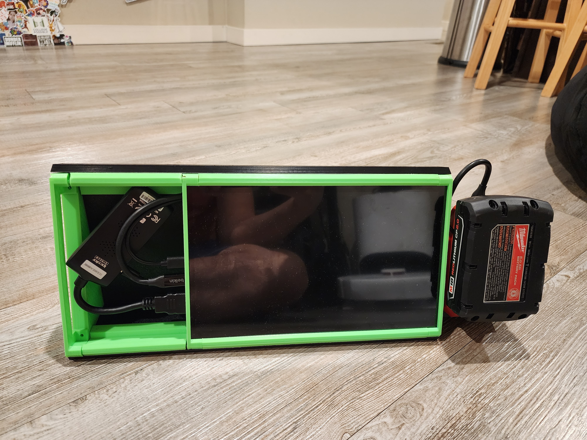

A monitor that may be able to be used at any part of the living room, allowing entertainment in multiple locations.
Description of project #2
Why?
A desktop PC is used as the main source of entertainment in a living room. The desktop is centralized in the living room. Two bean bag chairs are on the sides of the desktop. Ideally the PC should be viewed from anywhere in the living room. The empty space in the living room allows for alternative use cases that could come from social events or project assemblies.
V1
Initially a 8 inch touchscreen was attached to the desktop with a 12ft HDMI and USB cable that supplies data and power. The screen could be dragged along to either of the two bean bag chairs or on to the floor. A webcam was attached to the screen via another USB cable for the sake of video calls. A small controller sized keyboard was connected to the desktop. It had a wireless connection with a long battery life.

V2
The second version of the monitor assembly was constructed due to V1 loosing HDMI connectivity constantly. This was mainly due to moving and bending the HDMI cable repeatedly. The internal wires inside the HDMI cable is not meant to withstand constant movement. A wireless system is sought out. The new system would have the following:
- 10" Screen
- Raspberry Pi
- Milwaukee M18 battery
- Milwaukee M18 Charger
- 3D Printed Enclosure
The 10" screen was meant to directly interface with the Raspberry Pi 3 (what was available in inventory). The screen came with connectors and hardware for attachment purposes. After powering up the entire system, sunshine and moonlight onto the desktop and raspberry pi, respectively. This was so that the wireless keyboard dongle could be attached to the desktop and still be used when remotely connected. After connecting the two devices, it was noted that streaming services like Netflix or Disney+ could not be streamed due to Digital Rights Management (DRM). The raspberry pi was replaced with a HDMI transmitter and receiver. Netflix and Prime Video returned to normal but not Disney+. This is believed to be due to High-Bandwidth Digital Content Protection (HDCP).
V3
A wired connection between the desktop and monitor is needed once more to bypass the issues of V2. The central component in the center of the living room consisted of an aluminum extrusion frame. Inside the frame were logitech steering wheels and gas pedeals. The idea of the frame is to store gaming components and be able to have them mounted onto it when in use. Another frame above this is to contain the desktop, Xbox controllers, a projector, and the monitor. The two frames are stacked in between the two bean bag chairs. The desktop screen will be centered on the top frame. The screen is able to pivot in two joints to allow viewage of the screen from either bean bag chair.